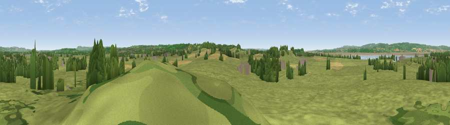

Viewpoint near Oldbury on Severn
#24218 in England · top 38% of its area beats it · near Oldbury on Severn · path 134 mWhere it is
The exact computed spot (ST 60825 91925). Click the marker for map links.
Public access: the nearest public right of way is about 134 m away — the final stretch may cross private land. Computed from Natural England's CRoW access layer and OpenStreetMap rights of way — not the legal definitive map. Always verify locally.
The view, rendered

A 360° render of this exact spot computed from the terrain model, tree cover and land cover — summer colours, afternoon light, calibrated against photographs of famous viewpoints. Real trees, hedges and buildings will differ in detail.
The panorama
Grey silhouette: terrain skyline in each direction (720 bearings, Earth curvature and refraction included). Dashed green: skyline with trees (+15 m) and buildings (+8 m) as obstacles. Blue strip: how far the ground is visible on each bearing.
Where the view opens
Wedge length = distance to the farthest visible ground on that bearing (vegetation-aware). Rings at 10, 25 and 50 km.
What fills the view
76% grassland · 10% woodland · 9% cropland · 3% water · 2% built-up
Angular shares of the visible panorama (visual magnitude), not map area. Landscape diversity 0.37 (0–1 Shannon).
Key numbers
More beautiful places nearby
The staircase of upgrades: each row has a higher view potential than everything closer. Driving times are estimates from straight-line distance, calibrated against real road routing — check an actual route before setting out.
| Place | Direction | Drive | Score |
|---|---|---|---|
| Viewpoint near Littleton-upon-Severn | SW · 1 km | ~4 min | 51.0 |
| Viewpoint near Littleton-upon-Severn | S · 2 km | ~5 min | 52.6 |
| Viewpoint near Aust | SW · 4 km | ~8 min | 59.4 |
| Viewpoint near Aust | WSW · 4 km | ~10 min | 60.1 |
| Viewpoint near Tidenham | NW · 7 km | ~14 min | 64.6 |
| Viewpoint near Woolaston | NNW · 9 km | ~17 min | 66.1 |
| Viewpoint near Almondsbury | S · 9 km | ~17 min | 68.3 |
| Viewpoint near Hewelsfield | NNW · 10 km | ~19 min | 69.6 |
51.62477, -2.56731 · source: screening · position refined by local search. Computed location — check access rights before visiting.